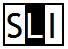
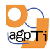

Dicionario CLUVI inglés-portugués
(Baseado no Corpus CLUVI da Universidade de Vigo)
Presentación
O Dicionario CLUVI Inglés-Portugués, elaborado no Seminario de Lingüística Informática (SLI) da Universidade de Vigo, é unha obra con características propias dentro da tradición lexicográfica galega. En primeiro lugar, trátase dun dicionario baseado nun corpus representativo de textos ingleses traducidos ao portugués. Este corpus textual de traducións inglés-portugués forma parte do Corpus Lingüístico da Universidade de Vigo (CLUVI). Todas as palabras inglesas que aparecen como entradas do dicionario están documentadas nos textos en inglés traducidos ao portugués recompilados no CLUVI. Alén diso, todas as traducións portuguesas que se recollen no dicionario para esas palabras son traducións reais identificadas nas versións portuguesas dos textos ingleses incluídas no CLUVI. Para cada tradución seleccionada, o dicionario fornece un exemplo real de uso documentado no CLUVI. As persoas interesadas en consultar máis exemplos de uso dunha tradución, poden utilizar a interfaz web ao CLUVI dispoñíbel no SLI. Esta utilidade permite facer buscas simples e complexas (con comodíns) de palabras ailladas ou de secuencias de palabras, e observar as equivalencias plurilingües dos termos pescudados nos seus contextos de uso en traducións reais e documentadas. Nesta versión 0.5 do Dicionario CLUVI Inglés-Portugués (2008), formada por 1347 entradas e 3031 traducións, tentamos de introducir no Dicionario as equivalencias inglés-portugués máis frecuentes no CLUVI. Nas próximas versións, habemos de completar o dicionario con máis entradas e equivalencias tiradas do CLUVI.
Artigos sobre o Corpus CLUVI
- Crespo Bastos, Ana, Xosé María Gómez Clemente, Xavier Gómez Guinovart e Susana López Fernández (2008): XML-based Extraction of Terminological Information from Corpora. En XATA2008 - XML, Aplicações e Tecnologias Associadas. Universidade do Minho, Braga (Portugal).
- Girju, Roxana (2007): Improving the Interpretation of Noun Phrases with Cross-linguistic Information. En Proceedings of the 45th Annual Meeting of the Association of Computational Linguistics, pp. 568-575. Prague, Czech Republic, June 2007.
- Girju, Roxana (2007): Experiments with an Annotation Scheme for a Knowledge-rich Noun Phrase Interpretation System. En Proceedings of the Linguistic Annotation Workshop, pp. 168-175. Prague, June 2007.
- Gómez Guinovart, Xavier (2007): A investigación en lexicografía e terminoloxía no Corpus Lingüístico da Universidade de Vigo (CLUVI) e no Corpus Técnico do Galego (CTG). En Actas do Simposio 'A Lexicografía galega do século XXI'. Organizado polo Instituto da Lingua Galega da USC (ILG), o Consello da Cultura Galega e a Real Academia Galega, do 2 ao 30 de novembro de 2006.
- Malvar Fernández, Paulo (2007): Aproximação à linguística de corpus como metodologia de base empírica. Compilação e anotação do Corpus Paralelo PALOP (português-espanhol) de Narrativa Pós-colonial. En Agália: Publicaçom internacional da Associaçom Galega da Lingua, 89-90, pp. 9-80.
- Gómez Guinovart, Xavier e Ánxeles Torres Padín (2006): Extracción dun vocabulario xurídico-administrativo galego-castelán a partir dun corpus paralelo. En M. Teresa Cabré, Carme Bach e Jaume Martí (eds.), Terminología y derecho: la complejidad de la comunicación multilingüe, Universitat Pompeu Fabra (Institut Universitari de Lingüística Aplicada), Barcelona, pp. 175-188.
- Gómez Guinovart, Xavier e Elena Sacau Fontenla (2005): Técnicas para o desenvolvemento de dicionarios de tradución a partir de córpora aplicadas na xeración do Dicionario CLUVI Inglés-Galego. Viceversa: Revista Galega de Traducción, 11, pp. 159-171.
- Gómez Guinovart, Xavier e Ánxeles Torres Padín (2005): Metodoloxía e ferramentas do traballo terminolóxico baseado en corpus: do Corpus Lingüístico da Universidade de Vigo ao Vocabulario xurídico-administrativo galego-castelán. Viceversa: Revista Galega de Traducción, 11, pp. 141-157.
- Gómez Guinovart, Xavier e Elena Sacau Fontenla (2004): Parallel corpora for the Galician language: building and processing of the CLUVI (Linguistic Corpus of the University of Vigo). En Teresa Lino et al. (ed.), Proceedings of the 4th International Conference on Language Resources and Evaluation, LREC 2004, pp. 1179-1182. Lisboa (Portugal), 26-28 maio 2004.
- Gómez Guinovart, Xavier e Elena Sacau Fontenla (2007): Técnicas de procesamento lingüístico-computacional de corpus paralelos no CLUVI (Corpus Linguístico da Universidade de Vigo). En VV.AA., Actas del VI Congreso de Lingüística General (Santiago de Compostela, 3-7 de mayo de 2004), Arco Libros, Madrid, 2007, pp. 855-864.
- Simões, Alberto; Almeida, José João; e Gómez Guinovart, Xavier (2004): Memórias de Tradução Distribuídas. En Ramalho, José Carlos e Simões, Alberto (eds.), XATA2004 - XML, Aplicações e Tecnologias Associadas, Universidade do Porto, Porto (Portugal), pp. 59-68.
- Gómez Guinovart, Xavier e Elena Sacau Fontenla (2004): Métodos de optimización de la extracción de léxico bilingüe a partir de corpus paralelos. Procesamiento del Lenguaje Natural, 33, pp. 133-140.
- Simões, Alberto; Gómez Guinovart, Xavier; e Almeida, José João (2004): Distributed Translation Memories implementation using WebServices. Procesamiento del Lenguaje Natural, 33, pp. 89-94.
- Aguirre Moreno, José Luis; Álvarez Lugrís, Alberto; e Gómez Guinovart, Xavier (2003): Aplicación do etiquetario morfosintáctico do SLI ó corpus de traduccións TECTRA. Viceversa: Revista Galega de Traducción, 7-8, 2002-2003, pp. 189-212.
- Aguirre Moreno, José Luis; Alberto Álvarez Lugrís; Iago Bragado Trigo; Luz Castro Pena; Xavier Gómez Guinovart; Santiago González Lopo; Angel López López; José Ramom Pichel Campos; Elena Sacau Fontenla e Lara Santos Suárez (2003): Alinhamento e etiquetagem de corpora paralelos no CLUVI (Corpus Linguístico da Universidade de Vigo). En Almeida, J.J. (ed.), Actas do Workshop CP3A 2003, Corpora Paralelos: Aplicações e Algoritmos Associados, pp. 33-47. Universidade do Minho, Braga (Portugal).
Proxectos de investigación sobre o CLUVI
- Deseño e implementacion dun servidor de recursos integrados para o desenvolvemento de tecnoloxías da lingua galega (RILG). Proxecto coordinado co Instituto da Lingua Galega. Ministerio de Educación y Ciencia, Plan Nacional de I+D+I, 2006-2009 (ref. HUM2006-11125-C02-01/FILO).
- Procesamento lingüístico-computacional do Corpus Lingüístico da Universidade de Vigo (CLUVI). Ministerio de Ciencia y Tecnología, Plan Nacional de I+D+I, 2002-2005 (ref. BFF2002-01385). Proxecto cofinanciado pola Dirección Xeral de I+D da Xunta de Galicia e pola Universidade de Vigo.
- Adquisición de recursos básicos de lingüística computacional do galego para aplicacións informáticas de tecnoloxía lingüística. Imaxin Software, Proxecto de I+D (Universidade - Empresa), 2002-2003.
- Estudio e adquisición de recursos básicos de lingüística computacional do galego para a elaboración e mellora de aplicacións informáticas de tecnoloxía lingüística. Con Imaxin Software. Secretaría Xeral de Investigación e Desenvolvemento, Xunta de Galicia, 2001-2004 (ref. PGIDT01TICC06E).
- Desenvolvemento e aplicación de técnicas de análise lingüístico-computacional de corpus orais e escritos para o procesamento do CLUVI (Corpus Lingüístico da Universidade de Vigo). Secretaría Xeral de Investigación e Desenvolvemento, Xunta de Galicia, 2001-2003 (ref. PGIDT01PXI30203PR).
- Desenvolvemento de ferramentas informáticas de revisión lingüística para a lingua galega. Imaxin Software, Proxecto de I+D (Universidade - Empresa), 2001-2002.
Créditos
Dicionario CLUVI Inglés-Portugués
Xavier Gómez Guinovart (coord.)
Equipo de redacción - Versión 0.5 (1347 entradas, 3031 traducións), 2008
Equipo de redacción - Versión 0.1 (729 entradas, 1552 traducións), 2006
- Adonay Custódia dos Santos Moreira
Seminario de Lingüística Informática (SLI), 2006-2008
Deseño e programación web: Xavier Gómez Guinovart
Entidades colaboradoras:
